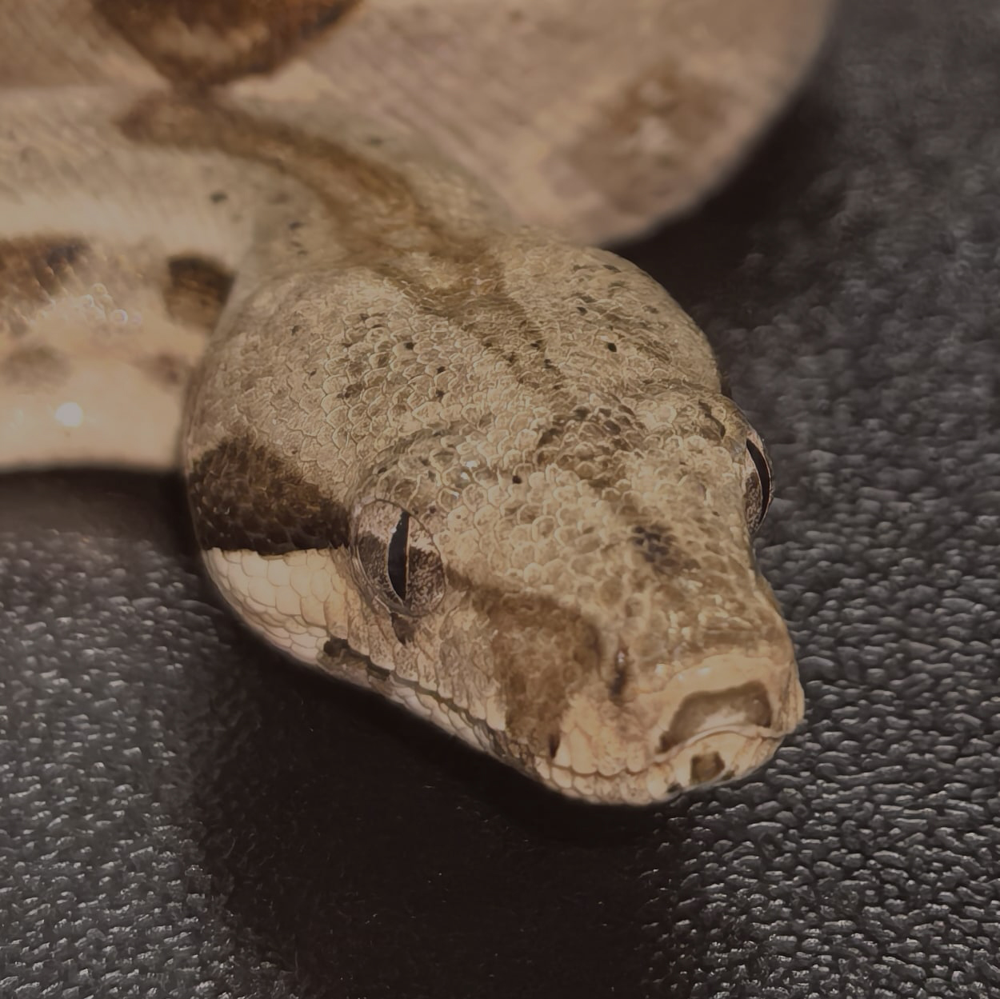
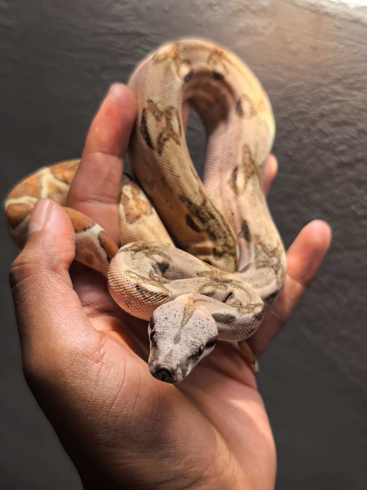

Philoreptiles
Philoreptiles es un espacio dedicado a la divulgación y el aprendizaje continuo en el mundo de las boas. Compartimos experiencias, observaciones y conocimientos de forma clara y honesta, documentando el proceso y promoviendo una herpetocultura responsable.
Descubre el proyecto ↓
Explorando el mundo de las boas
Creemos que comprender a estos increíbles animales es el primer paso para cuidarlos y respetarlos como se merecen. Día a día observamos y aprendemos de su comportamiento para compartir contigo información real, transparente y accesible: desde guías de cuidado y genética, hasta notas sobre el bienestar y manejo.
Sobre nosotros →Conoce a las boas
Taxonomía
Clasificación científica, especies y subespecies reconocidas del género Boa.
Explorar → ManutenciónCuidados en cautiverio
Parámetros de temperatura, humedad, terrarios y alimentación responsable.
Explorar → HerpetoculturaGenética
Principios de herencia genotípica, mutaciones recesivas y dominantes.
Explorar →Últimos artículos
[Título del post 1]
[Extracto corto del artículo, dos o tres líneas que inviten a seguir leyendo.]
Leer más →[Título del post 2]
[Extracto corto del artículo, dos o tres líneas que inviten a seguir leyendo.]
Leer más →[Título del post 3]
[Extracto corto del artículo, dos o tres líneas que inviten a seguir leyendo.]
Leer más →